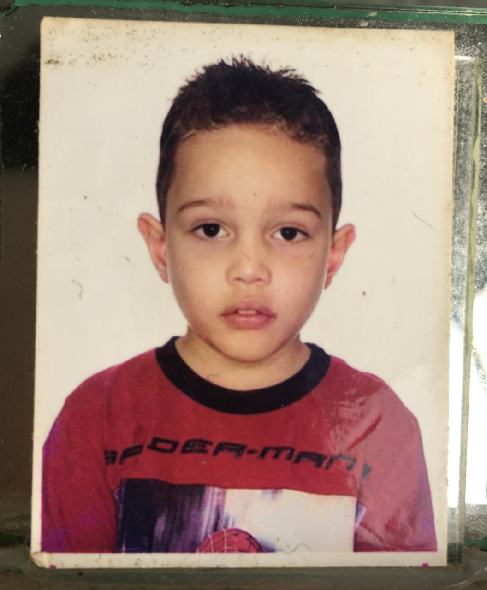

Eduardo A. dos Santos
da família Adriano
Nascido em 07/07/2003. Eduardo Adriano dos Santos nasceu na cidade de
Santos, porém, foi criado em São vicente desde novo. Quando ele era
pequeno, foi descoberto com uma doença em sua pele, onde tinha que
fazer um tratamento em que teria de raspar a pele e seria algo muito
doloroso para familia e para a própria criança. Mas, com uma familia
perseverante e com fé em seu Deus, levaram para o seu avô(que é pastor
de uma igreja) para que orasse pela criança. Após a fé de seus
familiares, logo a doença desapareceu de seu corpo e desde então isso
foi considerado um "milagre".

Desde novo foi criado como cristão em uma igreja evangélica, onde seu
avô ministra a palavra de Deus. A igreja tem 35 anos de existência.

Eduardo sempre gostou de assistir desenhos desde novo, gostava de
personagens como: Homem-aranha, Capitão América, Homem-de-ferro,
Ben-10... Acordava cedo para assistir seu programa favorito: "Tv
Globinho".
Sempre foi um garoto tímido e observador. Não gosta de arranjar
confusões e era bem calado. Eduardo era o tipico "nerd" que você deve
conhecer em sua escola. Mas, o tempo foi mudando isso e o moldando
para se tornar quem é hoje.
“Beba água, coma salada, esqueça as drogas e Fé pro resto” - L7NNON
- Nascido: 07/07/2003
- Sexo: Masculino
- Idade: 18 anos
- Peso: 62kg
- Altura: 1,60m
- Família: Adriano

Família
Eduardo Adriano dos Santos
A sua familia é composta por cerca de 28 primos parentecos de seu pai
e 3 de sua mãe. Como grande parte de sua infância morou longe de seus
familiares, não costumava brincar muito com seus primos. Desde pequeno
sempre foi muito apegado a sua mãe, a mulher de sua vida.
Por conta do trabalho seus pais o deixavam com sua avó, que é
considerada como uma segunda mãe.
"A verdadeira família é aquela unida pelo espírito e não pelo
sangue."
- Primos: 31
- irmãos: 0
- Amigos: Poucos
- Pai: 46 anos
- Mãe: 42 anos
Namoro
Eduardo A. e Ana Leticia N.
Eduardo começou a namorar com aos seus 19 anos, exatamente 312 dias ou 10 meses
e alguns dias. Por incrivel que pareça ele foi pedido em namoro pela Leticia que
se tornou o motivo de muitas coisas em sua vida. A vida fica mais
feliz quando se tem alguém em que pode confiar, se divertir, chorar,
pedir ajuda e ficar apenas calado, mas sentindo que só a companhia já
basta.
"I love you" - Léia
"I know " - Han Solo
Star Wars - O império Contra-Ataca

“Quem ama se torna humilde. Aqueles que amam, por assim dizer, penhoraram uma parte de seu narcisismo.” – Sigmund Freud.
Ter uma companhia para fazer tudo, mesmo sem trocar uma palavra, já é o suficiente. Pode não ser eterno (porque um dia
morreremos) mas enquanto durar, vamos aproveitar.
“Dumbledore ficaria mais contente do que qualquer outra pessoa na terra ao pensar que havia um pouco mais de amor no mundo.” - Harry Potter
Hobbies
Eduardo A. dos Santos
Eduardo tem 185 músicas favoritadas em seu Spotify. Gêneros como: Rap,
Pop, Trap, Gospel... Os seus artistas preferidos são o Charlie Brown
Junior (mais conhecido como CHORÃO) e L7NNON ou Lennon. Costuma ouvir
muita música em seu dia a dia, principalmente no ônibus.
Começou a aprender a tocar na igreja, com cerca de 15 anos de idade.
Atualmente toca instrumentos como: Violão, Guitarra e Baixo.
“O amanhã é ilusório, o ontem já não existe mais. O teu presente é o
que importa, faça a escolha certa e não olhe pra trás” - L7NNON
Estudos
Processo acadêmico
Estudou em 6 escolas durante a sua vida, desde o primário ao ensino
médio. Atualmente cursa técnico em Eventos Integrado ao Ensino Médio.
Formado em Técnico em Desenvolvimentos de Sistemas pela Etec Doutora
Ruth Cardoso em São Vicente.
Em seu primeiro TCC, quase não dormia e acabou desenvolvendo ansiedade
por conta da inexperiência em sofrer pressão. Foi um longo ano
desenvolvendo o TCC que mudou sua vida.

Eduardo prestou para ao mesmo tempo em 2019 para entrar no Ensino
Médio na Etec ou no Câmpus Cubatão, mas não passou em nenhuma das duas
escolas.
No ano de 2020 não desanimou e tentou novamente. Enfim, conseguiu
passar nas duas escolas e estudou ao mesmo tempo em dois períodos. No
câmpus das 13:15 ás 18:00 e na Etec das 19:00 ás 23:00. Foi assim
durante 1 ano e meio.
"Nunca deixei nada em branco. Aquele que tentou e não conseguiu é
superior àquele que não tentou."